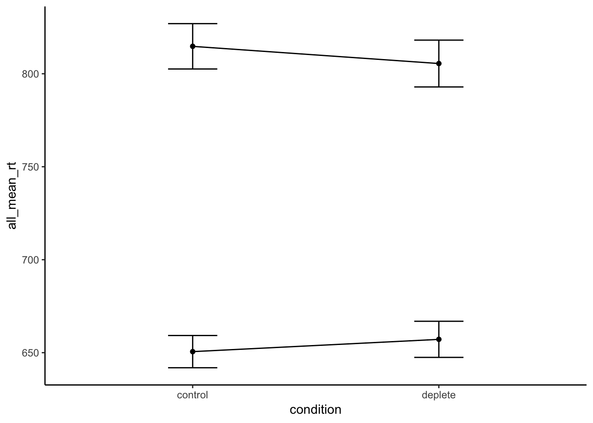
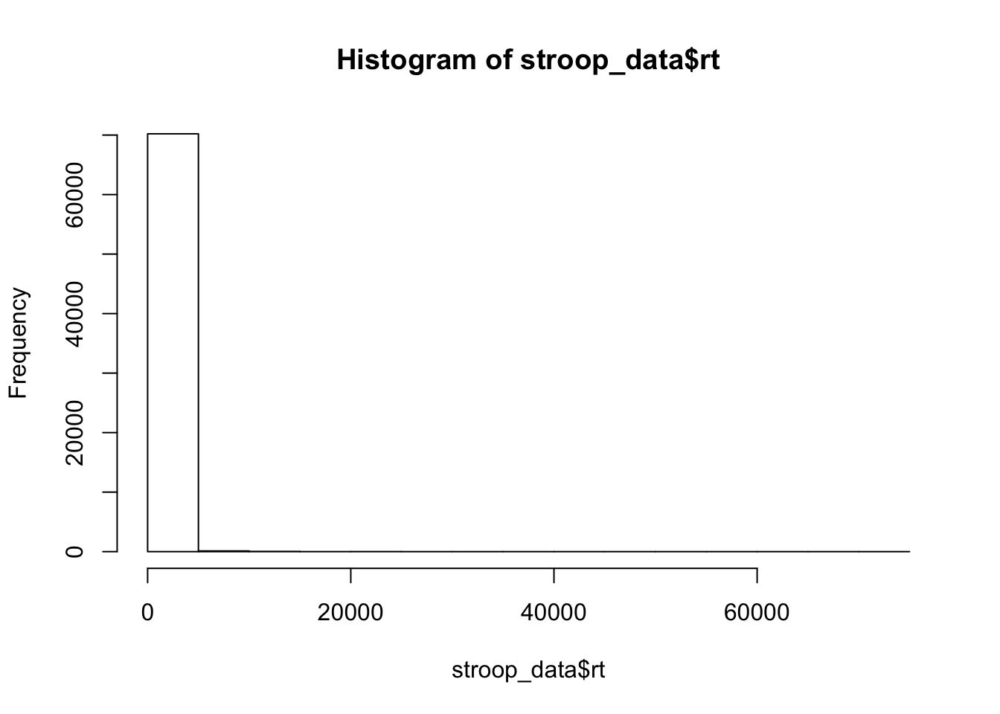
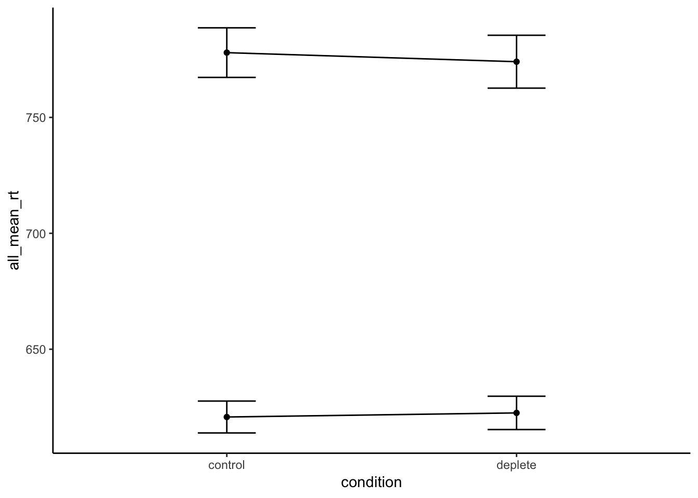

library(data.table)
stroop_data <- fread("data/stroopDataV2.csv")library(dplyr)##
## Attaching package: 'dplyr'## The following objects are masked from 'package:data.table':
##
## between, first, last## The following object is masked from 'package:kableExtra':
##
## group_rows## The following objects are masked from 'package:stats':
##
## filter, lag## The following objects are masked from 'package:base':
##
## intersect, setdiff, setequal, unionsubject_means <- stroop_data %>%
filter(acc==1) %>%
group_by(pNo,condition,congruency) %>%
summarize(mean_rt = mean(rt,na.rm=TRUE))
subject_means$pNo<-as.factor(subject_means$pNo)
subject_means$condition<-as.factor(subject_means$condition)
subject_means$congruency<-as.factor(subject_means$congruency)
aov_out <- aov(mean_rt ~ condition*congruency +
Error(pNo/(condition*congruency)),
subject_means)
summary(aov_out)##
## Error: pNo
## Df Sum Sq Mean Sq F value Pr(>F)
## Residuals 194 13256056 68330
##
## Error: pNo:condition
## Df Sum Sq Mean Sq F value Pr(>F)
## condition 1 340 340 0.029 0.864
## Residuals 194 2237601 11534
##
## Error: pNo:congruency
## Df Sum Sq Mean Sq F value Pr(>F)
## congruency 1 4761455 4761455 496.1 <2e-16 ***
## Residuals 194 1862040 9598
## ---
## Signif. codes: 0 '***' 0.001 '**' 0.01 '*' 0.05 '.' 0.1 ' ' 1
##
## Error: pNo:condition:congruency
## Df Sum Sq Mean Sq F value Pr(>F)
## condition:congruency 1 12282 12282 3.509 0.0626 .
## Residuals 194 679077 3500
## ---
## Signif. codes: 0 '***' 0.001 '**' 0.01 '*' 0.05 '.' 0.1 ' ' 1library(ggplot2)## Registered S3 methods overwritten by 'ggplot2':
## method from
## [.quosures rlang
## c.quosures rlang
## print.quosures rlangplot_df <- subject_means %>%
group_by(condition,congruency) %>%
summarize(all_mean_rt = mean(mean_rt),
SEM = sd(mean_rt)/sqrt(length(mean_rt)))
ggplot(plot_df, aes(x=condition, y=all_mean_rt, group=congruency))+
geom_line()+
geom_point()+
geom_errorbar(aes(ymin=all_mean_rt-SEM,
ymax=all_mean_rt+SEM),
width=.2)+
theme_classic()
hist(stroop_data$rt)
length(stroop_data$rt[stroop_data$rt>2000])## [1] 462max(stroop_data$rt)## [1] 74673library(Crump)
subject_means <- stroop_data %>%
filter(acc==1,
rt <=10000) %>%
group_by(pNo,condition,congruency) %>%
summarize(mean_rt = mean(modified_recursive_moving(rt)$restricted))
subject_means$pNo<-as.factor(subject_means$pNo)
subject_means$condition<-as.factor(subject_means$condition)
subject_means$congruency<-as.factor(subject_means$congruency)
aov_out <- aov(mean_rt ~ condition*congruency +
Error(pNo/(condition*congruency)),
subject_means)
summary(aov_out)##
## Error: pNo
## Df Sum Sq Mean Sq F value Pr(>F)
## Residuals 194 10279446 52987
##
## Error: pNo:condition
## Df Sum Sq Mean Sq F value Pr(>F)
## condition 1 224 224 0.034 0.855
## Residuals 194 1291658 6658
##
## Error: pNo:congruency
## Df Sum Sq Mean Sq F value Pr(>F)
## congruency 1 4644610 4644610 776.5 <2e-16 ***
## Residuals 194 1160467 5982
## ---
## Signif. codes: 0 '***' 0.001 '**' 0.01 '*' 0.05 '.' 0.1 ' ' 1
##
## Error: pNo:condition:congruency
## Df Sum Sq Mean Sq F value Pr(>F)
## condition:congruency 1 1580 1580 1.202 0.274
## Residuals 194 254908 1314plot_df <- subject_means %>%
group_by(condition,congruency) %>%
summarize(all_mean_rt = mean(mean_rt),
SEM = sd(mean_rt)/sqrt(length(mean_rt)))
ggplot(plot_df, aes(x=condition, y=all_mean_rt, group=congruency))+
geom_line()+
geom_point()+
geom_errorbar(aes(ymin=all_mean_rt-SEM,
ymax=all_mean_rt+SEM),
width=.2)+
theme_classic()